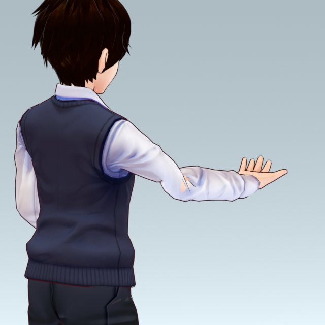
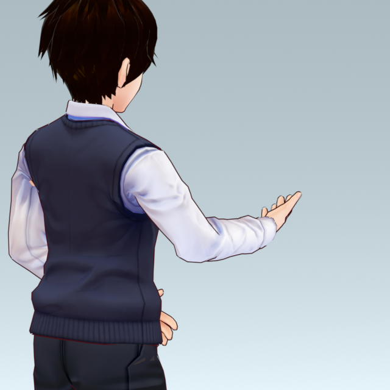
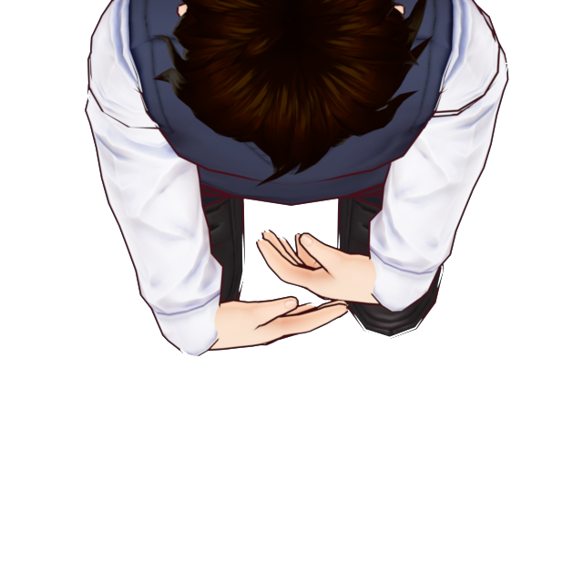
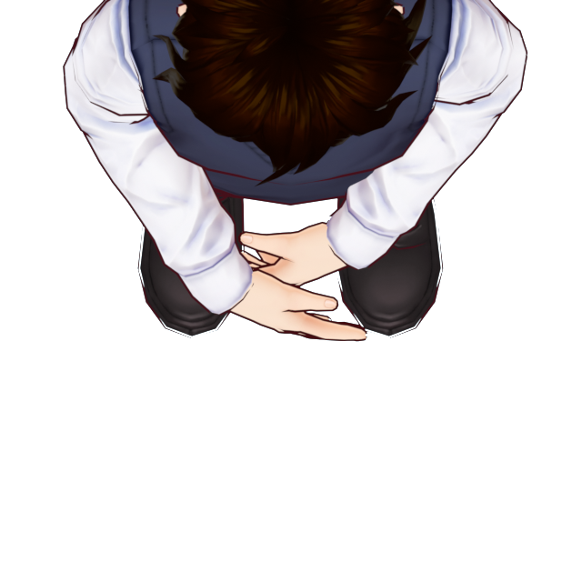

关节修正前后对比审核版 V2
同一模型、同一帧、同一拍摄位置。保留原有外观、骨架、动作时长和节奏。
待机双腕轴线夹角约 66° / 68° → 23° / 27°
讲解右前臂最大局部轴转约 147° → 71°
讲解全程最大腕部夹角约 71° → 30°
01 · 右肘后侧
讲解动作 F108。调整翻掌方向与上臂参与的转动后，原来的袖管凹陷和露肤消除。


02 · 腹前叠手
待机 F1 顶视。调整肘位、腕位和手掌方向，让手腕与前臂衔接更顺。

